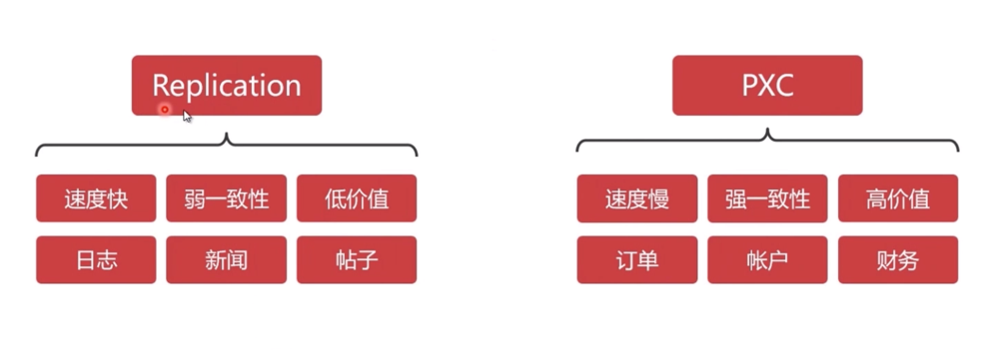
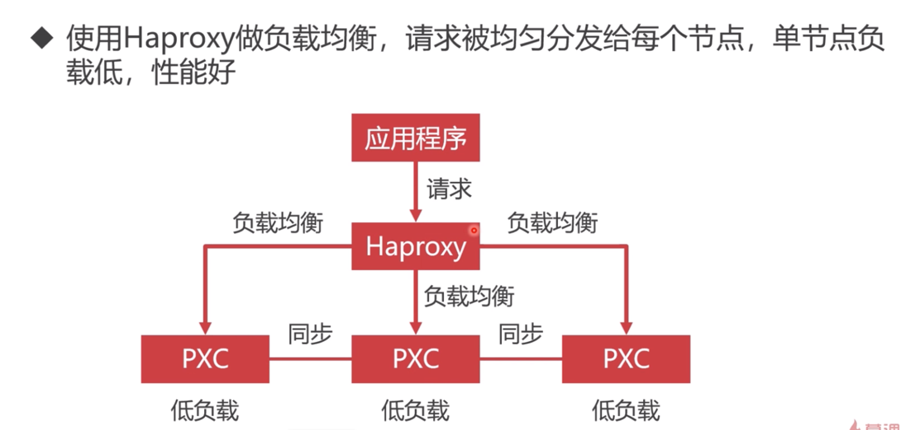
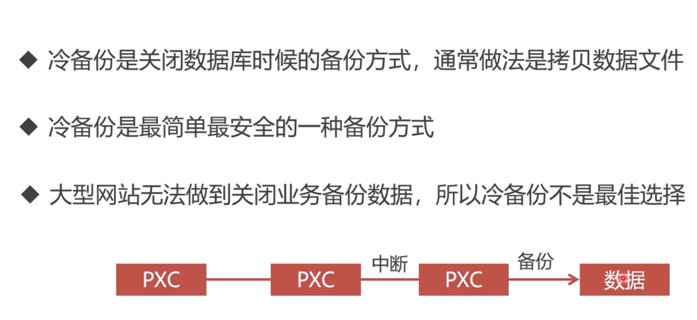
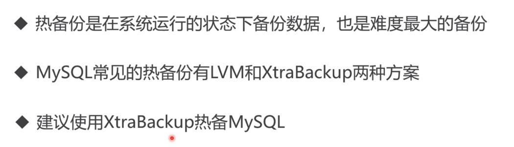

mysql
1. mysql集群方案

1.1 Percona XtraDB Cluster优缺点
优点如下： 1.当执行一个查询时，在本地节点上执行。因为所有数据都在本地，无需远程访问。 2.无需集中管理。可以在任何时间点失去任何节点，但是集群将照常工作。 3.良好的读负载扩展，任意节点都可以查询。
缺点如下： 1.加入新节点，开销大。需要复制完整的数据。 2.不能有效的解决写缩放问题，所有的写操作都将发生在所有节点上。 3.有多少个节点就有多少重复的数据。
2. mysql集群要使用负载均衡的必要性

3. pxc集群启动之后，因为有强一致性，所以一旦停机，必须重新删除容器，并重新启动才行
直接通过docker start node1 或者任何一个节点是启动不了的，原因是集群之前的同步机制造成的，启动任何一个节点，该节点都会去其它节点同步数据，其它节点仍处于宕机状态，所以该节点启动失败，这也是pxc集群的强一致性的表现，解决方式是，删除所有节点docker rm node1 node2 node3 node4 node 5
和数据卷中的grastate.dat文件
rm -rf /var/lib/docker/volumes/v1/_data/grastate.dat
rm -rf /var/lib/docker/volumes/v2/_data/grastate.dat
rm -rf /var/lib/docker/volumes/v3/_data/grastate.dat
rm -rf /var/lib/docker/volumes/v4/_data/grastate.dat
rm -rf /var/lib/docker/volumes/v5/_data/grastate.dat
数据库备份
冷备份

热备份

备份方案就是在宿主机创建一个数据卷，然后通过映射到容器内，实现备份。
数据库还原
采用冷还原，即采用空白的Mysql还原数据，然后再加入到集群中
注意:还原之后，一定要重启容器！！！